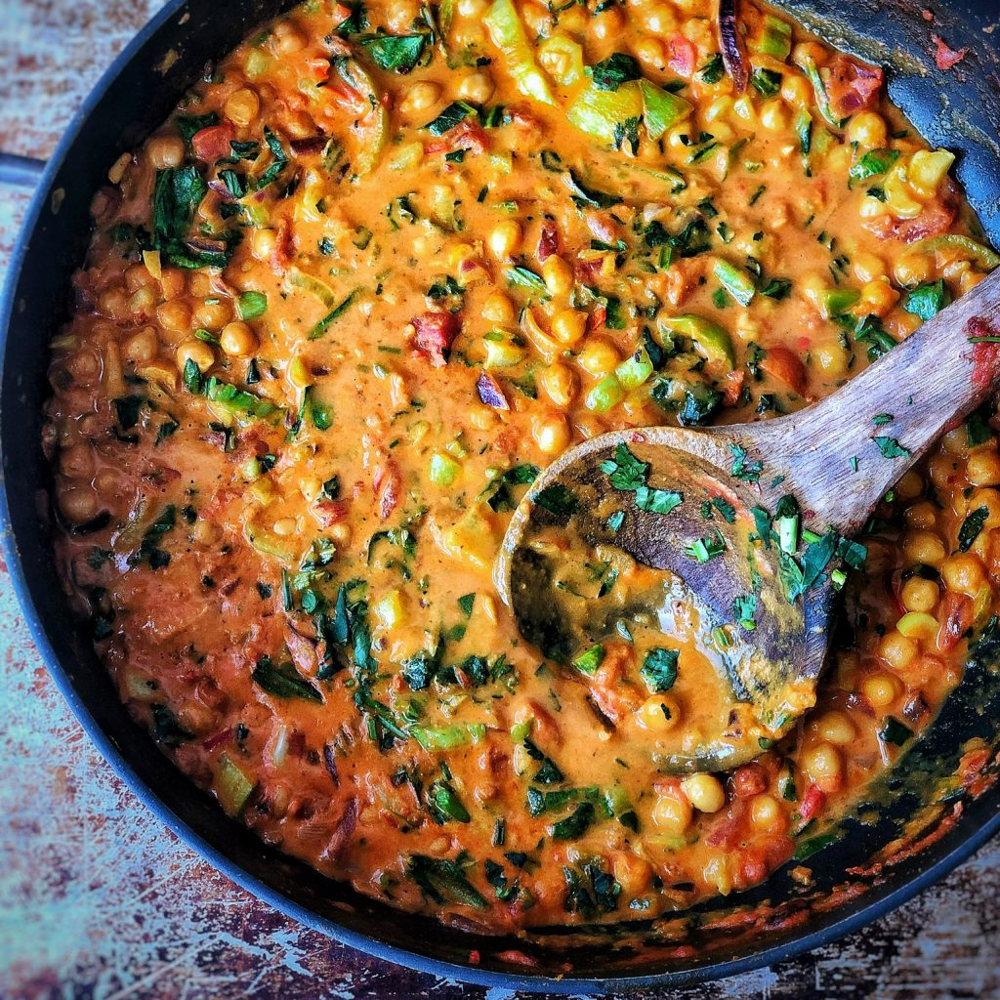

Chickpea Curry

Description
This recipe started out a challenge wondering could we cook a beautiful Chickpea curry in 5 mins – we weren’t sure if we could do it but low and behold it worked and it really tasted so good – so much so the recipe video for this has over 2 million views.
Ingredients
- 1/2 a red onion
- 2 tbsp olive oil
- 2tbsp of curry powder
- 1 clove of garlic
- 1 x 400g tin of chopped tomatoes
- 1 x 400g tin of chickpeas
- 1 x 400g tin of coconut milk
- 1 avocado
Instructions
- Heat the oil on a medium heat.
- Thinly slice the onion and garlic and add to the pan.
- Grate the ginger into the pan. No need to remove the skin!
- Add the spices and cook for 30 seconds.
- Add the chopped tomatoes, coconut milk and chickpeas.
- Add the lime juice, season to taste and serve with avocado and the grain of your choice. Lovely!